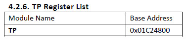
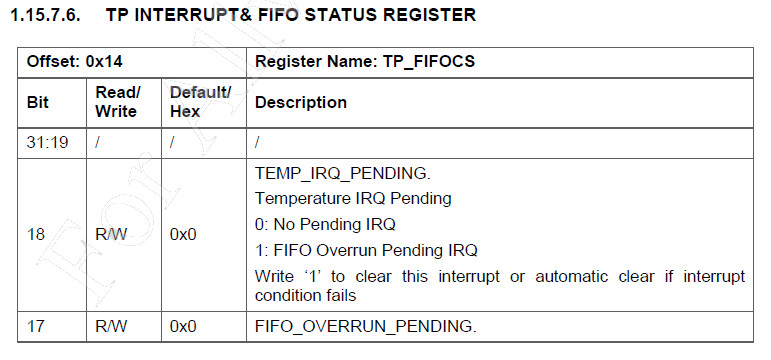
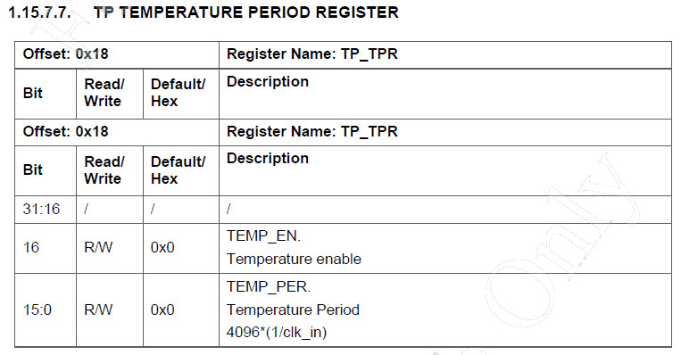
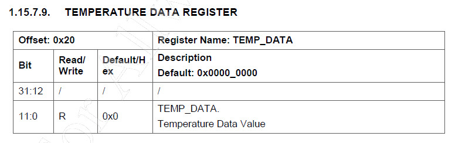

參考資料：
http://nano.lichee.pro/
https://mangopi.org/mangopi_r
據說這個溫度感測是在TP模組內




#include <stdio.h>
#include <stdint.h>
#include <stdlib.h>
#include <string.h>
#include <fcntl.h>
#include <sys/mman.h>
#include <unistd.h>
#include <time.h>
uint32_t push_it(uint32_t v)
{
int r=0;
int cc = 0;
static uint32_t buf[32] = { 0 };
for (cc = 0; cc < 31; cc++) {
buf[cc] = buf[cc + 1];
}
buf[31] = v;
r = 0;
for (cc = 0; cc < 32; cc++) {
r += buf[cc];
}
return (r >> 5);
}
int main(int argc, char* argv[])
{
int fd = -1;
uint8_t *mem = NULL;
uint32_t *TP_TPR = NULL;
uint32_t *TP_FIFOCS = NULL;
uint32_t *TEMP_DATA = NULL;
uint32_t *TP_CTRL_REG1 = NULL;
fd = open("/dev/mem", O_RDWR);
mem = mmap(0, 4096, PROT_READ | PROT_WRITE, MAP_SHARED, fd, 0x1c24000);
printf("mmap addr: %p\n", mem);
TP_TPR = (uint32_t*)&mem[0x818];
TP_FIFOCS = (uint32_t*)&mem[0x814];
TEMP_DATA = (uint32_t*)&mem[0x820];
TP_CTRL_REG1 = (uint32_t*)&mem[0x804];
*TP_CTRL_REG1 = (1 << 5);
*TP_TPR = (1 << 16);
while (1) {
if (*TP_FIFOCS & (1 << 18)) {
*TP_FIFOCS = 0xffffffff;
printf("temp: %d\n", push_it(*TEMP_DATA));
}
usleep(300000);
}
munmap(mem, 4096);
close(fd);
return 0;
}